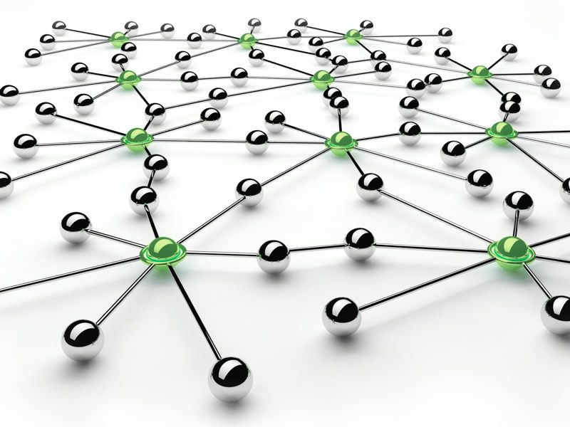
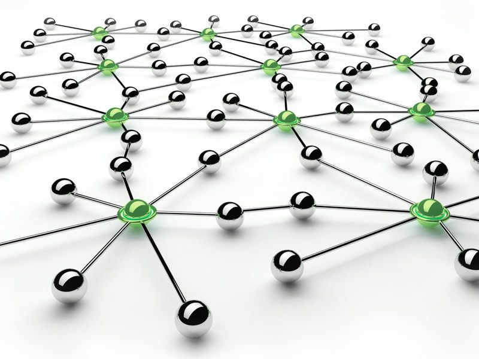

What is the Internet?
The Internet is a global computer network for communication and information. The internet moves data from one place to another, so individuals can chat, browse and share information. Packet-switching is when the data moves over the Internet, it sends an individual’s data in separate pieces (each tagged with your intended destination). When all the pieces reach their target, they are reassembled into their emails. Packets normally flow by many routes and it is determined by the quickest and most efficient timing you send the email. Using packet-switch, allows many people to use the Internet at the same time. On the Internet, there are millions of servers. These servers like to store information, some types of servers are file servers, mail servers and web servers. The internet is made up of routers, which make connections between different systems. An example of a router, at work or school, when several computers are networked, you are connected to one router, which is the single point of entry for the Internet. The Internet is commonly referred to as a “network of networks”.
 

When was the Internet created?
The Internet is known to have been created on January 1st, 1983. It is considered the official start and birthday of the Internet. Adding on, the various computer networks did not have a standard way to communicate with each other, until a new communications protocol was established as Transfer Control Protocol/Internetwork Protocol (TCP/IP) In the 1960s, the Internet was created as a way for government researchers to share information. It allowed different kinds of computers on different networks to communicate with each other. ARPANET and the Defense Data Network officially changed to the TCP/IP standard on January 1, 1983. Nowadays, all networks can be connected by a universal language referred to as English. The first-ever workable prototype of the Internet came in the late 1960s with the creation of ARPANET (Advanced Research Projects Agency Network).

Who created the Internet?
The Internet has put many brains together to be created. The internet was the work of many individuals ranging from pioneers, scientists, programmers, and engineers who developed new features and technologies which merged the “information superhighway”. The information superhighway is an electronic network such as the internet, used for transferring information like sound, video and graphics. Way before technology was invented to build the internet, many scientists have already anticipated the existence of worldwide networks of information. Nikola Tesla was the one who had created the idea of a “world wireless system”. Her idea was created in the early 1900s, and visionary thinkers like Paul Outlet and Vannevar Bush conceived of it as mechanized, and they found searchable storage systems of books and media from the 1930s to 1940s.

Why was the Internet created?
The internet was first created for military purposes in the Pentagon called Arpanet in 1969. The theory suggests that the network was designed to survive a nuclear attack, surviving a nuclear attack was not Arpanet’s motivation, nor was building a global communications network. During the Cold War, the internet was important to have communications links between the military and university computers that would not be disrupted by bombs or opponent spies. To solve this issue, DARPA ((Defense Advanced Research Projects Agency) made contracts with BBN (Bolt, Beranek and Newman) to create ARPANET (Advanced Research Projects Agency Network). Afterwards, the use of the internet was the purpose of communication among scientists.